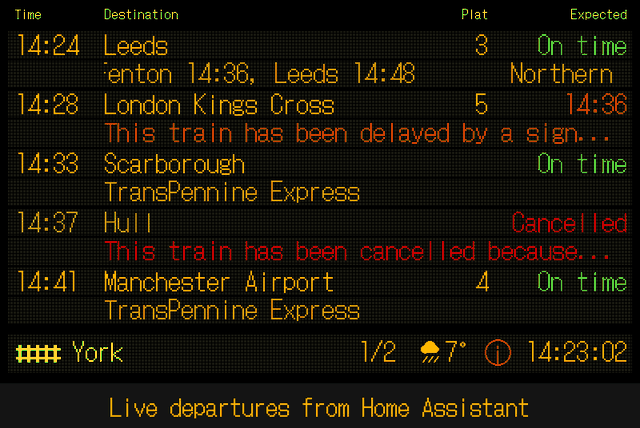

A live UK train departure board for the Elecrow CrowPanel Basic 7.0" (ESP32-S3), fed by Home Assistant.

Tap a train for its detailsLondon Underground and DLR
National Rail, London Underground and DLR
Delays, cancellations, platforms and calling points
Up to 5 stations or routes, switched with a swipe
Station messages, Tube line status and a focus mode
Six themes and three layouts
Updates itself overnight (re-import the blueprint when the release notes say so)
You need: the CrowPanel 7", Home Assistant 2026.11 or newer, and a free National Rail Darwin token for My Rail Commute (step 4).
1. Install the firmware. Use Chrome or Edge on a computer, with the board plugged in by USB.
This browser can't flash devices. Use Chrome or Edge on a computer.
Wi-Fi. Enter your Wi-Fi details when the page asks. If it doesn't ask, join the Departure-Board Wi-Fi from your phone and pick your network.
Add it to Home Assistant. In Settings > Devices & services, add the discovered ESPHome device (no key needed). Not found? Choose Add integration > ESPHome and enter the board's IP address.
Add your station. Install My Rail Commute from the Marketplace and add your station with 10 services. Then, in the station's Configure > Disruption, set Departed train grace period to 1 minute.
Connect them. Import the blueprint, then go to Settings > Automations & scenes > Blueprints > UK Departure Board > Create automation. Pick your board and station, then Save. Trains appear within a minute.
Busy station? Add a route in My Rail Commute (your station with a destination) and pick that instead. Tube or DLR? Install London TfL from the Marketplace and pick it under London Underground / DLR stations.
Optional: get the dashboard. Every control and setting for your board, on one Home Assistant dashboard.
On your board's device page in Home Assistant, click any setting (Layout, say), then the cog, and copy its Entity ID. Paste it here:
Go to Settings > Dashboards > Add dashboard > New dashboard from scratch and open it. Click the pencil, then ⋮ > Raw configuration editor. Replace everything with what you copied, then Save.
Settings, themes and troubleshooting: GitHub. Not affiliated with National Rail, TfL or Elecrow.